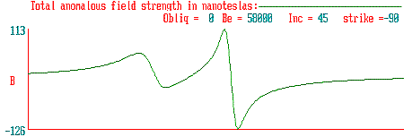
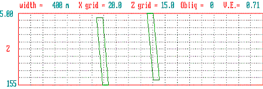

| 1.
|
At mid-northern latitudes (45°) the assymetric anomaly has the low end pointing north. Buried dykes are oriented east-west. |
| 2.
|
At mid-southern latitudes (45°) the anomalous "low" is on the south side. |
| 3.
|
If buried dykes point north-south so that the survey line runs east-west, the anomaly recorded is very different. |
| 4.
|
At the magnetic poles, anomalies are symmetric. (Note values for inclination and strike.) |
| 5.
|
At the magnetic equator, anomalies are also symmetric, but opposite those at the magnetic poles. |
| 6.
|
If you survey along a line that is at 45° to (rather than perpendicular) the buried 2D target, the anomaly is again very different. |
| 7.
|
If the shallower body included some remanent magnetization, the anomaly would now consist of the sum of induced and remanent magnetic fields. Compare to example 2., the "normal" anomaly in the southern hemisphere.
|
| |
 |
| |

Model earth has two 2D dykes both with susceptiblity k = 15 x 103. |